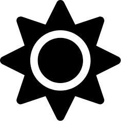

Projet de Gestion des Tâches
todo
doing
done
research
Ajouter la tâche
Trier par nom
Trier par date d'échéance
Supprimer la liste de tâches
Show All
Afficher les tâches à faire
Afficher les tâches en cours
Afficher les tâches terminées
Afficher les tâches de recherche
Edit Task
todo
doing
done
research
Save
Close